Joshua Tazman Reinier is a Double Degree in Comparative Literature and Composition at Oberlin. He is interested in the relationship between music and language, and his work spans poetry, composition, and performance. He is currently writing his Honors Thesis in Comparative Literature on Stéphane Mallarmé’s relationship with music. Joshua was named a 2017 Semifinalist in the US Presidential Scholars in the Arts, and was a fellow at the 2019 Cortona Sessions for New Music. His poetry and academic research has been published in the Two Groves Review, the Plum Creek Review, and Johns Hopkins’ 2020 Macksey Journal.
poet

Inspired by symbolism, surrealism, and poststructuralist thought, my poetry searches for a rhetoric of ghosts: a posthuman becoming, as we are all already simulations and cyborgs. Recently I have published six poems in the Plum Creek Review at Oberlin, and recently recieved an XARTS grant from Oberlin College to work on a project entitled "hauntings," which blends poetry and sound.
performer

I sing and play piano, guitar, and some cello, improvising between classical, folk, jazz, and experimental styles. I play in the Self-Prescribing Doctors Union, a quintet at Oberlin making post-alt free jazz, with an upcoming album in summer 2020.
composer

My music explores the sonic dimensions of language and extending the listerner's idea of listening, inspired by spectralism, avant-garde composers such as Cage and Feldman, and music-theater artists including Lachenmann, Beat Furrer, and Georges Aperghis. My pieces have been featured at the Cortona Sessions for New Music, and I am currently setting John Taggart's "Slow Song for Mark Rothko" to music for the Oberlin Contemporary Music Ensemble.
educator

I believe in antiracisst pedagogies and student-centered learning, seeking to inspire students to see education as discovering who they are. I am a facilitator for Barefoot Dialogues, a Course Writing Associate for Oberlin College, and a Teaching Fellow at Breakthrough Collaborative, where I teach 9th-grade English to motivated students of low-income backgrounds.
researcher

Working in French, Spanish, German, and English, I research the relationship between music and language, as well as global surrealism, symbolism, and feminist-posthumanist philosophy. I am writing my Honors Thesis in Comparative Literature on French Symbolist poet Stéphane Mallarmé, and how Pierre Boulez' musical settings disrupt Mallarmé's musical philosophy; I have also published a paper in John Hopkins' 2020 Macksey Journal exploring feminist hysteria in Cixous and Clément, Gilman, and Ferrante.
coder

Today, our minds are part software; I make environments for learning, productivity, and tools to enhance creativity. My projects include Flop&Pop, a task manager; Lipolator, a word-searcher; and TonalityTool, a multitool for musical analysis; as well as maintaining this website.